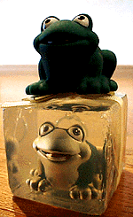
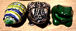

|
カエル眺めて悩みもケロリ！ 仕事や育児の激務を癒すカエル生活！
 【福岡発=げこげこ大王直筆】『カエルが好きだあああ』と叫んでいると、不思議に集まってくるのがカエルグッズというものだ。大王の周辺にも、人様からいただいたカエルな置物や道具がごろんごろんしているのだが、このところ自宅で可愛がっているのが、石鹸に封じ込められたカエル野郎と、自由に生きているカエル野郎なのだ。彼らは、どちらも中国製だが、発売国はアメリカという、まったく同じ会社から発売されているしろものだ。別々の人から相次いでもらった。笑顔で足をふんばっているカエルだけでも、心がなごむのだが、微笑みたくなるのは、石鹸の中にいるやつも、封じ込められた境遇に屈することなく、人生を楽しんでいるようで『よーっし。俺もがんばるぞー』という勇気を与えられるのである。 北海道旭川市にある、カエラーの３大名所のひとつがま記念館入り口の体長５メートルのゲートカエルのデザインと似ている点も大好きな理由だ。
 カエラーになってよかったなーと思うのは、いろんな人からもらったカエルを出勤前に、にぎったり触れたりして、幸せを感じることができることであろうか。大王様の自宅にあるカエルグッズは、自分で購入したものはあまりない。大半は、旅先や出張先や家事の合間にでかけた雑貨店で目にして、購入して、プレゼントしていただいたものばかりだ。『きょうは、仕事つらいなー』とか、思うときに、玄関先に並べた、ガラス製カエル、金属製カエル、木製カエルをそれぞれに握りしめて『いってきまーっす』と声をかけて出勤する。
すると、まーカエルのおかげで終日、なごやかな気分でいられるってわけです。みなさんの場合は、どんなカエルを身近に置いて、なごんでいるんでしょうか。
ヤマアカガエルはモーニング娘ファン？ヒッキーには無反応！【日本発=kei-f同志記者】平成12年3月12日で紹介したヤマアカガエルですが、３月２１日にもフジテレビで放映されていました!!フジテレビではさらに検証が行われていました。それはカエルたちに演歌以外の歌を聴かせるというものでした。
まずは、昨年の大ヒット曲、宇多田ヒカル『First Love』。……………反応無し。 訪問９９９９９人目に記念品贈呈！【全国かえる奉賛会】９９９９９人目の訪問者に、記念品を贈呈するぞー。該当者は、大王様へのメールwakuro-3@hf.rim.or.jpで自己申告してくれー。福岡かえる展２のＭＬを開設！【福岡かえる展２事務局】福岡かえる展２の実行委員会用のメーリングリストを開設しました。公式ホームページの他に、実行委員会メンバーが情報交換する場所です。もちろん最新の情報は、昨年同様に、できるかぎりすべて、公式ホームページで公開します。メーリングリストで、その準備段階から体験したいというカエラーは、参加していただいてかまいません！参加申し込みは、ここからも自分でできるからねーっ！ 投稿採用者に武功カエル徽章を授与！ |
かえる古新聞過去に取り上げた記事を見出し付きで一覧したい人は、ここをクリック◆創刊号を見る◆先週号を見る◆話題の号を見る◆かえる新聞の昔を読む
|
私も入っています。。全国かえる奉賛会
大王様に会うには、このバナーをクリック。ずっと奥に写真館があるぞ。全国かえる奉賛会に入会するには、自分のホームページのどこかに、下の部分を追加するとバナーがリンク付きで表示されるぞ。どんどん入会しましょー |


|